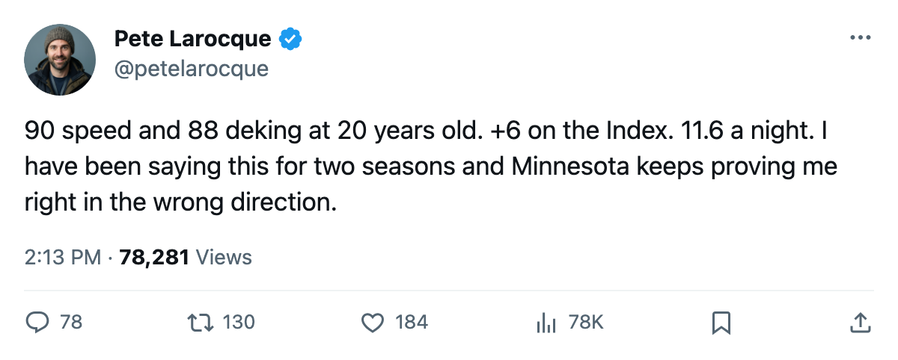
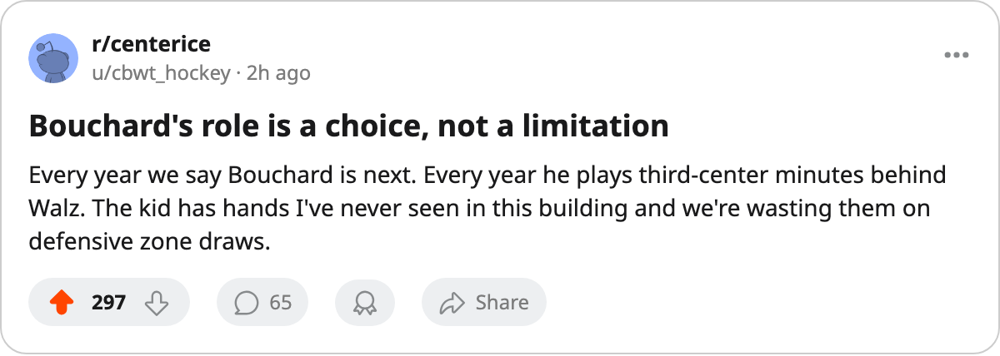

90 Speed, 88 Deking, 11.6 Minutes a Night
Pierre-Marc Bouchard carries the same Development Index rating as Gaborik and Komisarek. Minnesota gives him fourth-line ice.
 Pete LarocqueScouting editor · The Prospect File
Pete LarocqueScouting editor · The Prospect File
Six players sit at +6 on the Bureau's Development Index. Pierre-Marc Bouchard77 is the youngest by two years and the one who plays the fewest minutes. He turns 21 on April 27. He skates 11.6 a night for a  Minnesota Wild club that finished 22-38-9 and missed the postseason.
Minnesota Wild club that finished 22-38-9 and missed the postseason.
The Bureau's Book gives him 77 overall, which is 74 base plus 6 on the Index. 90 speed. 88 deking. 88 passing. 88 puck handling. 87 acceleration. 87 agility. At 20, on a team with 79 points, these are the numbers of a man who should be driving a second line.
He had 29 points in 82 games this season. Last year he managed 10 in 36. The jump is real, and the Index says it's still climbing. The minutes didn't move: 11.0 to 11.6. He plays center behind  Saku Koivu85 and
Saku Koivu85 and  Wes Walz84, who together ate the first two center slots all year. Minnesota had no reason to shuffle a bottom-feeder roster in the final quarter.
Wes Walz84, who together ate the first two center slots all year. Minnesota had no reason to shuffle a bottom-feeder roster in the final quarter.
The +6 club, and where they play
| Player | Team | Age | Overall | Points | MPG | Potential |
|---|---|---|---|---|---|---|
 Marian Gaborik97 Marian Gaborik97 |  Toronto Maple Leafs Toronto Maple Leafs | 23 | 96 | 99 | 20.5 | 90 |
| Mike Komisarek82 |  Montreal Canadiens Montreal Canadiens | 23 | 82 | 82 | 30.4 | 91 |
 Mike Cammalleri83 Mike Cammalleri83 |  Los Angeles Kings Los Angeles Kings | 22 | 83 | 60 | 20.8 | 97 |
| Pierre-Marc Bouchard | Minnesota Wild | 20 | 77 | 29 | 11.6 | 88 |
 Vaclav Nedorost78 Vaclav Nedorost78 |  Florida Panthers Florida Panthers | 23 | 78 | 25 | 13.4 | 93 |
| Jared Aulin75 | Los Angeles Kings | 23 | 75 | 15 | 9.3 | 94 |
Gaborik has 99 points. Komisarek plays 30.4 minutes on a 66-point team and has 82 points as a defenseman. Cammalleri has 60 and is up +6 on a 79-point club. The three men at the bottom of the table have the same form surge and a fraction of the ice. Bouchard is the only one under 23.
I watched him at the 2002 draft. The scouts in the room went two ways: the hands and speed were franchise, the frame was a question. He listed 70 inches, 165 pounds at the combine. Three years later he's 20 and still carrying 50 in fighting, 50 in toughness, 52 in checking. The Bureau made him the 8th pick of 2002 with 88 potential, which means they think the offense carries him through all of it.
The contract year
Bouchard carries $1.20M with 1 year left. He turns 21 in 12 days. If Minnesota keeps him in a 3C role for one more season and he puts up 30 points again, the restricted-free-agent market opens with 90 speed and 88 deking on the card. A club that plays him at 18 minutes gives him a shot at 40. A club that plays him where he is now gets a 29-point second-line center for a year and then loses him for nothing more than a qualifying offer they can't clear against.
Minnesota finished 5th in the Northwest. They have  Manny Fernandez88 at 88 in goal and Koivu at 85 up the middle, and that's their window. Bouchard is the thing they trade when it closes, or the thing they keep too long and watch leave.
Manny Fernandez88 at 88 in goal and Koivu at 85 up the middle, and that's their window. Bouchard is the thing they trade when it closes, or the thing they keep too long and watch leave.
The Bureau gave him 88 potential. The Book says 77 today. The gap is 11 points, and the skill grades say it closes by putting him on the first line. Someone has to do it.

